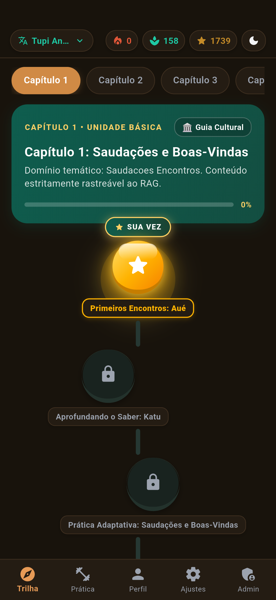
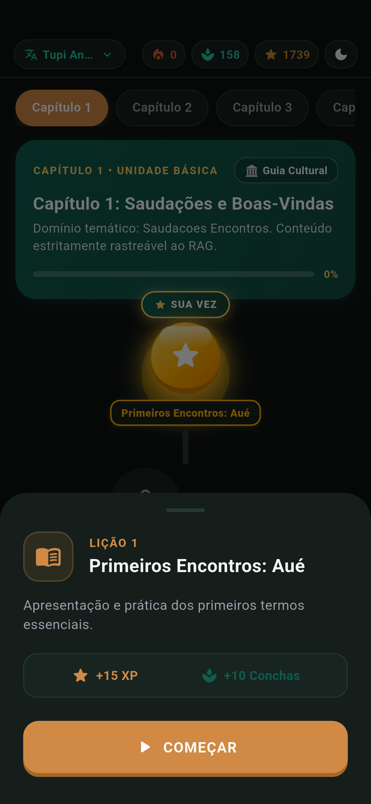
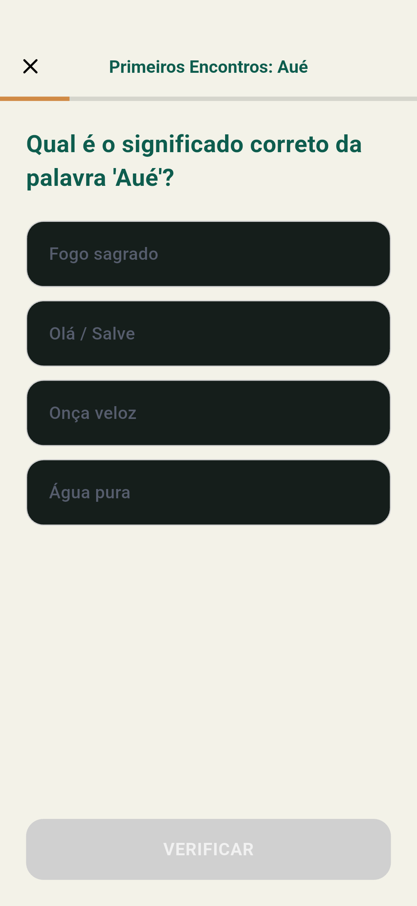
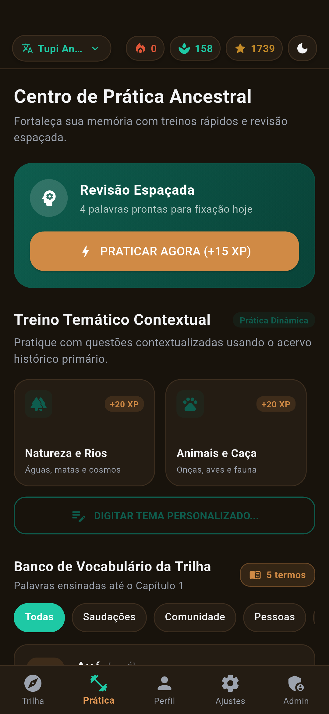
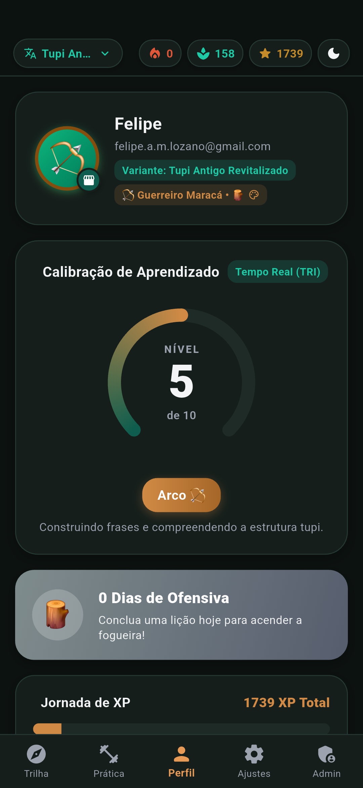
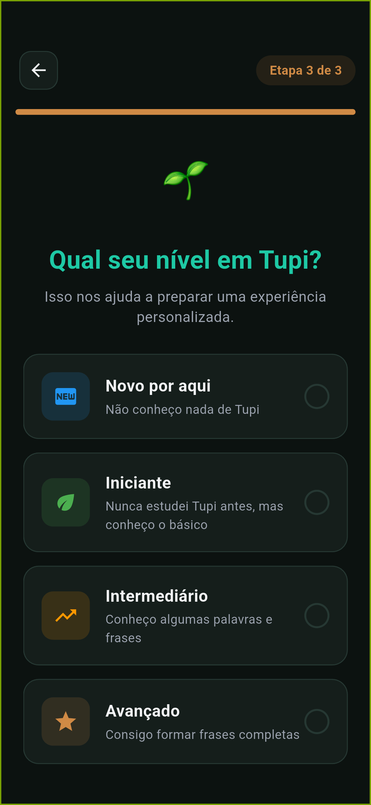

Preservação e Ensino do Tupi Antigo no Android
Aprenda a língua clássica indígena do Brasil com lições gamificadas, rigor linguístico e metodologia moderna baseada na obra de Eduardo de Almeida Navarro (USP). Uma experiência nativa fluida, inteligente e acessível.

Explore o TupiLingo na Prática
Conheça o fluxo de lições, a dinâmica dos exercícios interativos e a experiência visual nativa construída para um aprendizado imersivo e prazeroso.

Mascote Oficial & Acolhimento
O mascote do TupiLingo acompanha sua jornada com a máxima ancestral: "Eikuaa nde rapo, emo'ĩ nde rekove porãve" (Conheça suas raízes, viva melhor).
Trilha de Aprendizado
Progresso modular com nós de lições estilizados, iluminação temática da floresta, conquistas culturais e avanço dinâmico de experiência.

Entrada de Lição
Resumo dos objetivos filológicos, vocábulos essenciais da sessão e pontuação estimada antes de dar início ao módulo.

Exercícios Interativos
Desafios estruturados de tradução, identificação de termos e regras de declinação com respostas visuais e táteis imediatas.

Interação e Resposta Tátil
Interface responsiva com realce visual em terracota, garantindo segurança na escolha antes do envio ao validador sintático.

Sabedoria Ancestral
Contextualização etimológica e histórica após cada acerto, relacionando os vocábulos ao uso cotidiano e à cosmovisão dos povos originários.

Centro de Prática & SRS
Revisão inteligente fundamentada na curva de retenção de memória, com sessões organizadas por temas culturais e vocabulário chave.

Perfil e Habilidade
Acompanhamento detalhado do histórico de estudo, ofensivas diárias, títulos honoríficos e calibração contínua do aprendizado.

Diagnóstico Inicial
Mapeamento rápido do nível de familiaridade, direcionando iniciantes absolutos e conhecedores prévios ao módulo mais adequado da trilha.
Especificações Técnicas & Arquitetura
Documentação técnica sobre a pilha de execução nativa, camadas de criptografia, renderização gráfica acelerada e modelagem matemática.
Compilação Nativa & Camadas
AOT RuntimePipeline compilado diretamente em código de máquina para arquiteturas ARM64 (aarch64) e ARMv7 pelo compilador nativo Dart AOT, eliminando gargalos de máquinas virtuais interpretadas.
| Engine Frontend | Flutter 3.44 / Dart 3.9 |
| API Backend | Django 5.1 REST Framework |
| Persistência | PostgreSQL & Supabase RLS |
| Compatibilidade | Desugaring de APIs Java 8+ (D8/R8) |
| Target SDK | Android 15 (API 35) / Min API 21 |
Segurança & Criptografia
C++ FFI / AES-256Ofuscação binária de segredos e chaves de comunicação encapsuladas em bibliotecas nativas C++ via Dart Foreign Function Interface (FFI), protegendo contra engenharia reversa estática.
| Ofuscação Nativa | Binário C++ compilado via Dart FFI |
| Integridade Dinâmica | Validação por Checksum FNV-1a / HMAC |
| Cache em Disco | Criptografia AES-256-GCM |
| Autenticação | OAuth2 com PKCE Flow (RFC 7636) |
| Proteção de Rede | TLS 1.3 / Certificate Pinning |
Desempenho & Shaders
60 / 120 FPSPipeline de renderização acelerado por GPU com fragment shaders customizados em GLSL/SPIR-V para efeitos atmosféricos de aura e neblina mística com consumo mínimo de bateria.
| Pipeline Gráfico | Impeller / Skia Hardware-Accelerated |
| Shaders Customizados | mystic_aura.frag, fog_of_war.frag |
| Taxa de Atualização | Suporte adaptativo a 60Hz / 120Hz |
| Otimização de Rede | HTTP/2 Coalescing & Cache ETag |
| Tolerância Offline | Fila transacional em SQLite nativo |
Psicometria & Algoritmos
TRI 2PL & SRSCalibração adaptativa do traço latente de conhecimento do estudante (θ) através da Teoria de Resposta ao Item combinada a intervalos ótimos de repetição espaçada.
| Modelo de Aferição | Modelo Logístico de 2 Parâmetros (TRI 2PL) |
| Parâmetros de Item | Discriminação (α) e Dificuldade (β) |
| Curva de Retenção | Algoritmo SRS Intervalado Adaptativo |
| Base Filológica | Método Moderno de Tupi Antigo (Navarro) |
| Classificação Erros | Taxonomia Morfossintática Direcionada |
Fundamentos do TupiLingo
A união equilibrada entre tecnologia móvel contemporânea e a principal referência acadêmica no ensino do Tupi Antigo.
Base Filológica Reconhecida
Vocabulário, ortografia e regras sintáticas estruturados rigorosamente sobre o Método Moderno de Tupi Antigo do Prof. Dr. Eduardo de Almeida Navarro (USP).
Repetição Espaçada Inteligente (SRS)
O algoritmo calcula os intervalos ótimos para apresentação e revisão de cada lexema estudado, transferindo o vocabulário para a retenção de longo prazo.
Gamificação Pedagógica
Sistemas de ofensiva contínua (streak), conchas culturais, cosméticos temáticos e marcos de aprendizado para sustentar o engajamento diário.
Privacidade e Transparência
Sem anúncios ou telemetria invasiva de terceiros. Seus dados de aprendizado permanecem protegidos sob criptografia e armazenamento local no dispositivo.
Resiliência Offline
Todo o conteúdo didático e as lições principais são armazenados no banco SQLite local, permitindo o estudo ininterrupto mesmo em locais sem sinal de internet.
Salvaguarda Cultural
Projeto orientado à divulgação científica e preservação de patrimônio imaterial, aproximando o público contemporâneo da raiz fundacional da toponímia e cultura brasileira.
Como Instalar o APK no Android
O TupiLingo está em fase de pré-lançamento público e é disponibilizado diretamente pelo repositório oficial no GitHub. A instalação é simples, rápida e segura.
Clique no botão "Baixar APK (v1.0.0-preview)" no cabeçalho ou no topo da página. O navegador exibirá um alerta padrão informando que arquivos APK baixados diretamente podem trazer riscos. Toque em "Fazer o download mesmo assim" para concluir a transferência do pacote assinado de 57.3 MB.
Ao término do download, toque na notificação de conclusão (app-release.apk) na barra superior do seu dispositivo. Caso tenha descartado a notificação, abra o aplicativo "Arquivos" ou "Downloads" do seu aparelho e toque no arquivo correspondente.
Caso o seu Android nunca tenha instalado aplicativos baixados pelo navegador em uso, um diálogo do sistema solicitará permissão de instalação de fontes desconhecidas. Toque em Configurações e ative o botão "Permitir desta fonte".
Retorne à janela do instalador e toque em "Instalar". Em instantes o ícone do TupiLingo estará acessível em sua tela inicial e gaveta de aplicativos, pronto para utilização imediata.
Transparência sobre Instalação Direta
O alerta emitido pelo sistema operacional Android constitui procedimento de segurança padrão para qualquer aplicação instalada via arquivo APK (processo de sideloading). O TupiLingo é um projeto educacional e de código aberto com integridade auditável via repositório público no GitHub, sem códigos publicitários ou bibliotecas invasivas de rastreamento.